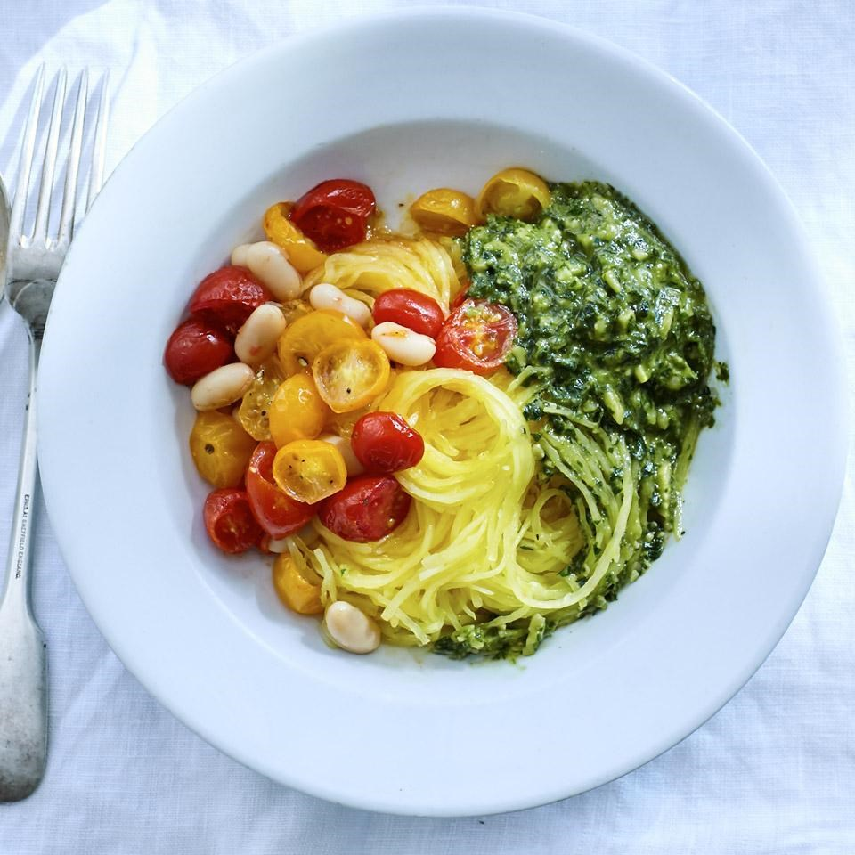
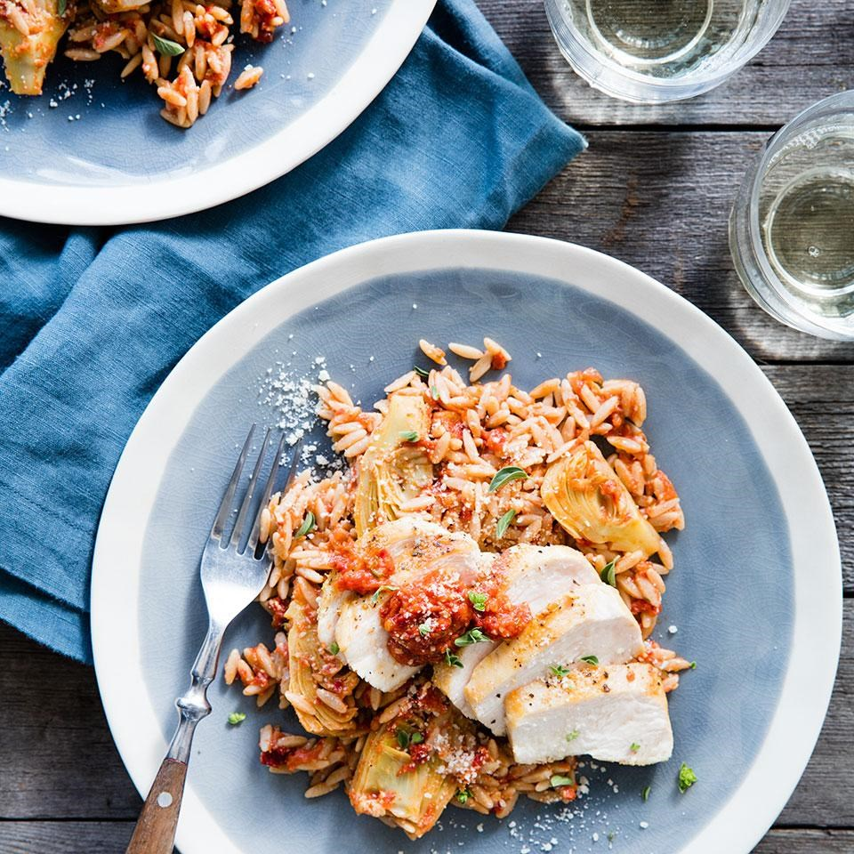
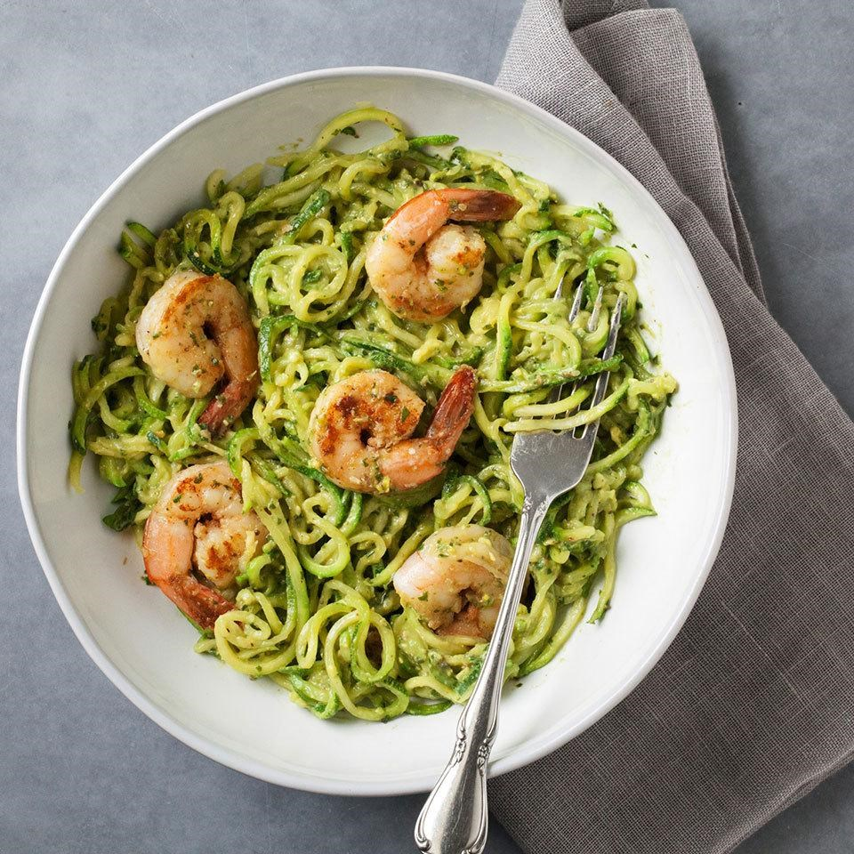
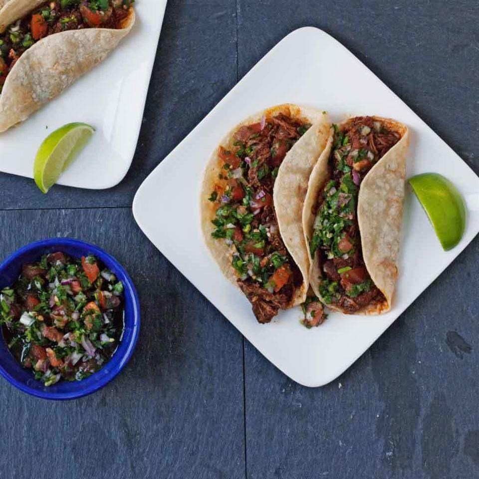

Treat yourself right
Grilled Salmon with Tomato & Basil
This recipe is beautiful yet simple to prepare. Spread a side of salmon with minced garlic, sprinkle with gresh basil, then layer sliced tomatoes on top. Put it on the grill for 10 mins and you're done!
How to prepare?
-
Ingredients :
- > 2 cloves garlic, minced
- > 1 teaspoon kosher salt, divided
- > 1 tablespoon extra-virgin olive oil
- > 1 whole wild salmon fillet (also called a “side of salmon,” about 1½ pounds
- > ⅓ cup + ¼ cup thinly sliced fresh basil, divided
- > 2 medium tomatoes, thinly sliced
- > ¼ teaspoon freshly ground pepper 
- > 2 cups fresh basil leaves
- > 1 cup fresh parsley leaves
- > ½ cup grated Parmesan cheese
- > ⅓ cup whole raw almonds
- > 1 clove garlic
- > 1½ tablespoons red-wine vinegar
- > ¼ teaspoon kosher salt
- > ¼ teaspoon ground pepper
- > ¼ cup extra-virgin olive oil
- > ¼ cup water
- > 1 3-pound spaghetti squash
- > ¼ cup water
- > 2 pints grape tomatoes, halved
- > 1 tablespoon extra-virgin olive oil 
- > 8 ounces orzo, preferably whole-wheat
- > 1 cup water
- > ½ cup chopped sun-dried tomatoes, (not oil-packed), divided
- > 1 plum tomato, diced1 clove garlic, peeled
- > 3 teaspoons chopped fresh marjoram, divided
- > 1 tablespoon red-wine vinegar
- > 2 teaspoons plus 1 tablespoon extra-virgin olive oil, divided
- > 4 boneless, skinless chicken breasts, trimmed (1-1¼ pounds)
- > ¼ teaspoon salt
- > ¼ teaspoon freshly ground pepper
- > 1 9-ounce package frozen artichoke hearts, thawed
- > ½ cup finely shredded Romano cheese, divided 
- > 5-6 medium zucchini (2¼-2½ pounds total), trimmed
- > ¾ teaspoon salt, divided
- > 1 ripe avocado
- > 1 cup packed fresh basil leaves
- > ¼ cup unsalted shelled pistachios
- > 2 tablespoons lemon juice
- > ¼ teaspoon ground pepper
- > ¼ cup extra-virgin olive oil plus 2 tablespoons, divided
- > 3 cloves garlic, minced
- > 1 pound raw shrimp (21-25 count), peeled and deveined, tails left on if desired
- > 1-2 teaspoons Old Bay seasoning 
- > 3 tablespoons chili powder
- > 1 tablespoon dried oregano
- > 1 tablespoon ground cumin
- > ¼ teaspoon salt
- > ½ teaspoon cayenne pepper
- > ½ teaspoon garlic powder
- > 3 pounds beef chuck, trimmed and cut into 1-inch cubes
- > 1 tablespoon extra-virgin olive oil
- > 1 large onion, halved and sliced
- > 1 cup low-sodium beef broth
- > 3 tablespoons tomato paste16 corn tortillas
- > Lime wedges for serving
- > ¾ cup diced tomato (about 1 medium)
- > ½ cup chopped fresh cilantro
- > ¼ cup finely diced red onion
- > 1 jalapeño pepper, seeded if desired, finely diced
- > 1 tablespoon lime juice
- > ¼ teaspoon salt
Spaghetti Squash with Roasted Tomatoes, Beans & Almond Pesto
Looking at a tangle of spaghetti squash tricks your brain into thinking you're about to eat a serving of eggy noodles, when in fact, you get a nice calorie and carb savings in this healthy recipe. Giving tomatoes a stint in a hot oven makes them candy-sweet.
How to prepare?
-
Ingredients :
Almond Pesto Sauce
Spaghetti Squash & Vegetables
Chicken & Sun-Dried Tomato Orzo
Sun-dried tomatoes and Romano cheese pack a flavorful punch along with the tantalizing aroma of fresh marjoram in this rustic Italian-inspired dish. Serve with sautéed fresh spinach or steamed broccolini.
How to prepare?
-
Ingredients :
Zucchini Noodles with Avocado Pesto
Cut some carbs and add an extra serving of veggies and use spiralized zucchini in place of noodles in this zesty pesto pasta dish recipe. Top with Cajun-seasoned shrimp to complete this quick and easy dinner.
How to prepare?
-
Ingredients :
Beef Tacos with Pico de Gallo
Use your crock pot for perfectly tender beef in this easy taco recipe. The quick fresh pico de gallo adds crunch, flavor and color, but your favorite fresh salsa will make a great taco topper in a pinch.
How to prepare?
-
Ingredients :
Tacos
Pico de Gallo